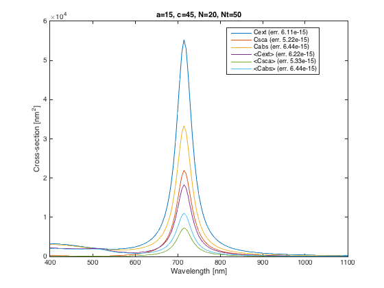

ScriptSolveForFixedSpectrum
An example script showing how to obtain the field expansion coefficients and far-field cross-sections for a spheroid in a fixed orientation, as a function of wavelength. Plots the wavelength-dependent spectra for extinction, scattering, and absorption cross-sections for fixed orientation, as well as orientation-averaged.
Contents
Instructions
Note that you need to run InitPath in the root folder first to add required folders to the Matlab path so that functions can be called Alternatively, uncomment the following line
run('..\InitPath');
The following parameters should be defined:
- a: semi-axis along x,y
- c: semi-axis along z
- N: number of multipoles for T-matrix
- nNbTheta: number of thetas for quadratures
- lambda: wavelength (in same unit as a and c)
- k1: wavevector in embedding medium (of refractive index nM) (k1=2*pi*nM/lambda)
- s: relative refractive index (s=n_Particle / nM) lambda, k1, and s must here be wavelength-dependent vectors [L x 1]
- sIncType: string such a 'KxEz' defining the incident field)
- or stIncPar: struct defining the incident field (alternative to sIncType)
clear all close all
Parameters of the scattering problem
We define parameters for a gold nanorod in water, modeled as a prolate spheroid

a = 15; % in nm c = 45; % in nm, i.e. 30 x 90nm full-axes lambda = (400:5:1100).'; % in nm epsilon2 = epsAu(lambda); epsilon1 = 1.33^2; % for water % Define incident field along main axis sIncType = 'KxEz';
Convergence parameters
Maximum multipole order for T-matrix and series expansions of fields
N = 20;
% Number of points for Gaussian quadratures to compute integrals in P and Q matrices
nNbTheta = 50;
Collect simulation parameters in a structure
k1 = 2*pi./lambda * sqrt(epsilon1); s = sqrt(epsilon2)/sqrt(epsilon1); stParams.a=a; stParams.c=c; stParams.k1=k1; stParams.s=s; stParams.N=N; stParams.nNbTheta=nNbTheta; stParams.lambda=lambda; stParams.epsilon2=epsilon2; stParams.epsilon1=epsilon1; stParams.sIncType = sIncType; % Optional parameters may also be defined as follows: stOptions.bGetR = false; stOptions.Delta = 0; stOptions.NB = 0; % NB will be estimated automatically stOptions.bGetSymmetricT = false; stOptions.bOutput = false; % suppress messages in lambda-loop
T-matrix calculation
Solve for T (all wavelengths)
tic; stC = slvForFixedSpectrum(stParams,stOptions); fprintf('\nT-matrix (N = %d) ... done in %.2f seconds.\n', N, toc); % use this call instead to keep the expansion coefficients for further % processing %[stC, stAbcdnm] = slvForT(stParams,stOptions);
Loop over 141 lambda values... T-matrix (N = 20) ... done in 22.92 seconds.
Convergence test
To test for convergence and accuracy, we choose the wavelength with the largest k1|s| and repeat the calculation with N=N+5 and nNbTheta=nNbTheta+5
[~,indWorst]=max(abs(stParams.k1 .* stParams.s)); stParams2 = pstGetParamsStructOneLambda(stParams,lambda(indWorst)); stParams2.N=stParams2.N+5; stParams2.nNbTheta=stParams2.nNbTheta+5; fprintf('\nConvergence testing for lambda = %.2f.\n', lambda(indWorst)); tic; stC2 = slvForFixed(stParams2,stOptions); fprintf('\nT-matrix (N = %d) ... done in %.2f seconds.\n\n', N, toc); % relative errors relerrExt = (abs(stC.Cext(indWorst)./stC2.Cext-1)); relerrSca = (abs(stC.Csca(indWorst)./stC2.Csca-1)); relerrAbs = (abs(stC.Cabs(indWorst)./stC2.Cabs-1)); relerrExtoa = (abs(stC.Cextoa(indWorst)./stC2.Cextoa-1)); relerrScaoa = (abs(stC.Cscaoa(indWorst)./stC2.Cscaoa-1)); relerrAbsoa = (abs(stC.Cabsoa(indWorst)./stC2.Cabsoa-1));
Convergence testing for lambda = 1100.00. T-matrix (N = 20) ... done in 0.37 seconds.
Plotting the results
figure('Name','ScriptSolveForFixedSpectrum'); plot(lambda,[stC.Cext,stC.Csca,stC.Cabs,stC.Cextoa,stC.Cscaoa,stC.Cabsoa]); legend({['Cext (err. ', num2str(relerrExt,3),')'], ... ['Csca (err. ', num2str(relerrSca,3),')'], ... ['Cabs (err. ', num2str(relerrAbs,3),')'], ... ['<Cext> (err. ', num2str(relerrExtoa,3),')'], ... ['<Csca> (err. ', num2str(relerrScaoa,3),')'], ... ['<Cabs> (err. ', num2str(relerrAbsoa,3),')']}, ... 'Location','Best'); title(['a=', num2str(a), ', c=',num2str(c),', N=', int2str(N), ', Nt=', int2str(nNbTheta)]); xlabel('Wavelength [nm]') % x-axis label ylabel('Cross-section [nm^2]') % y-axis label